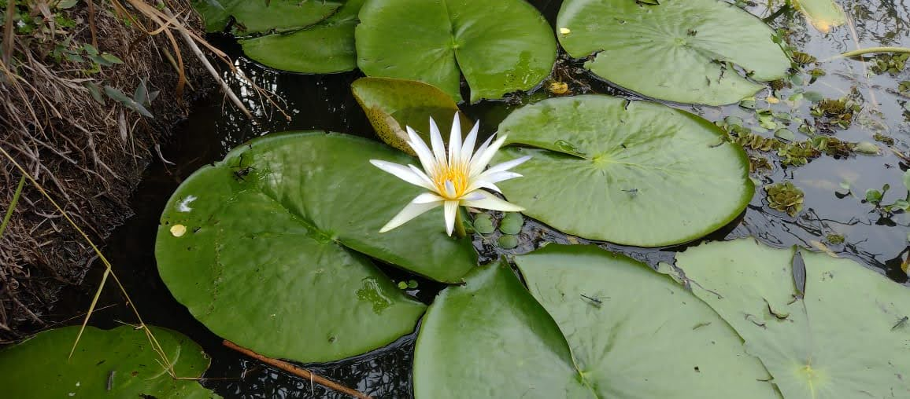
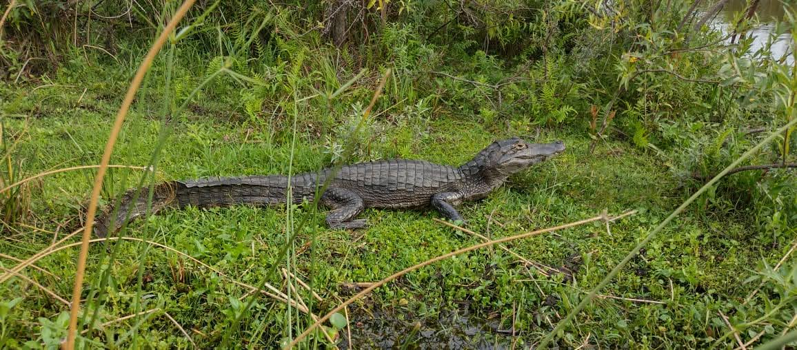
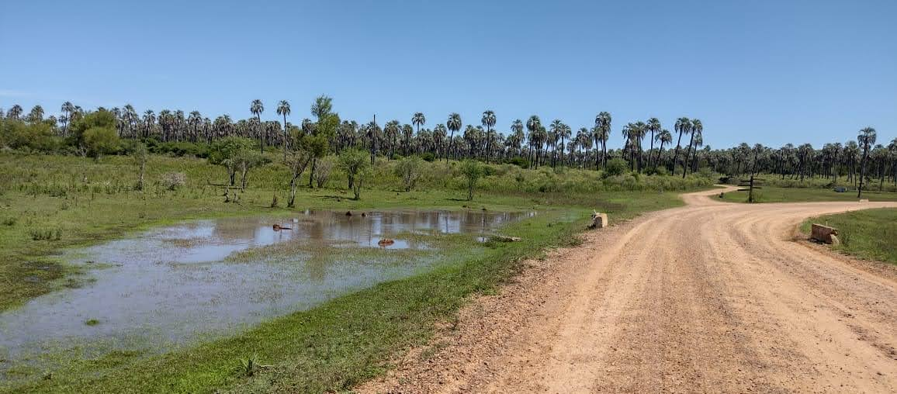
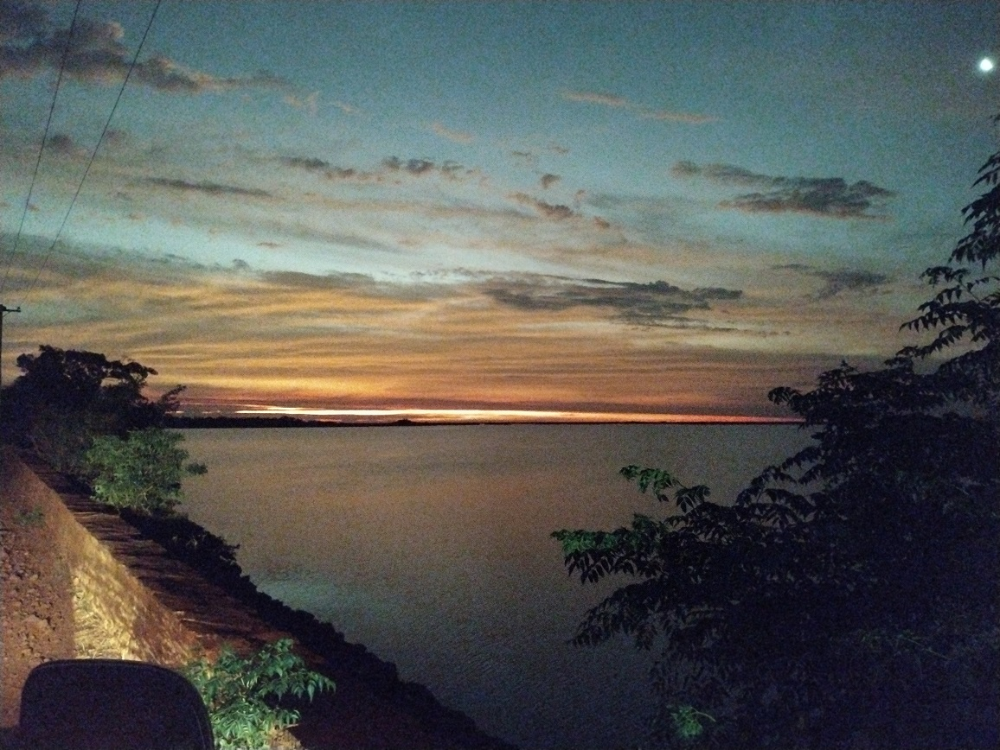
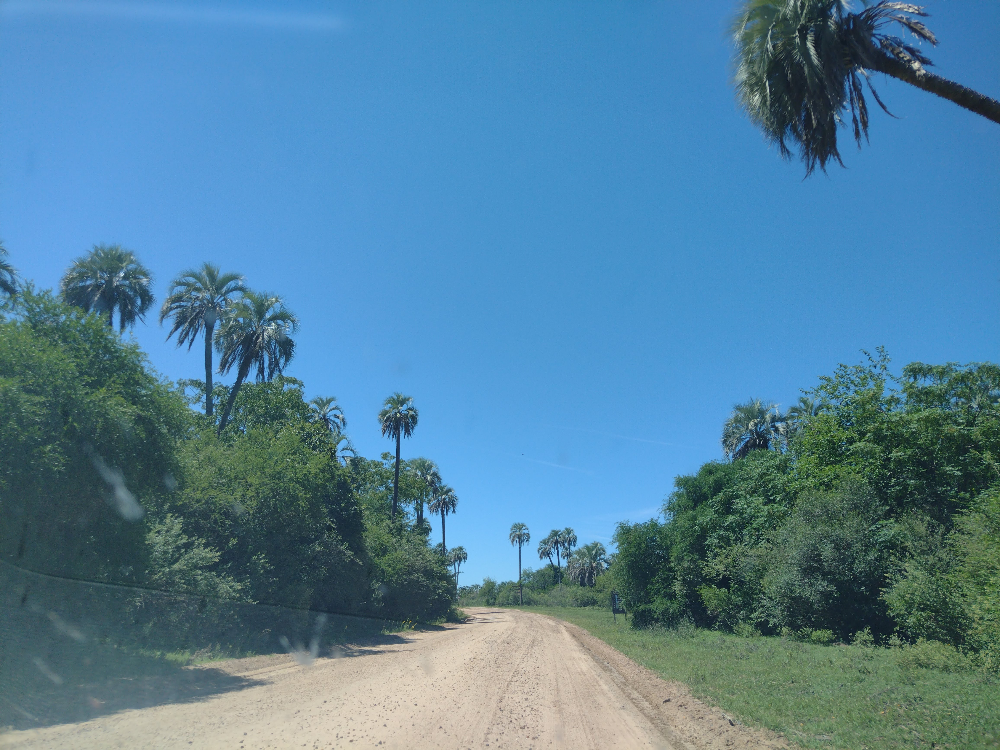
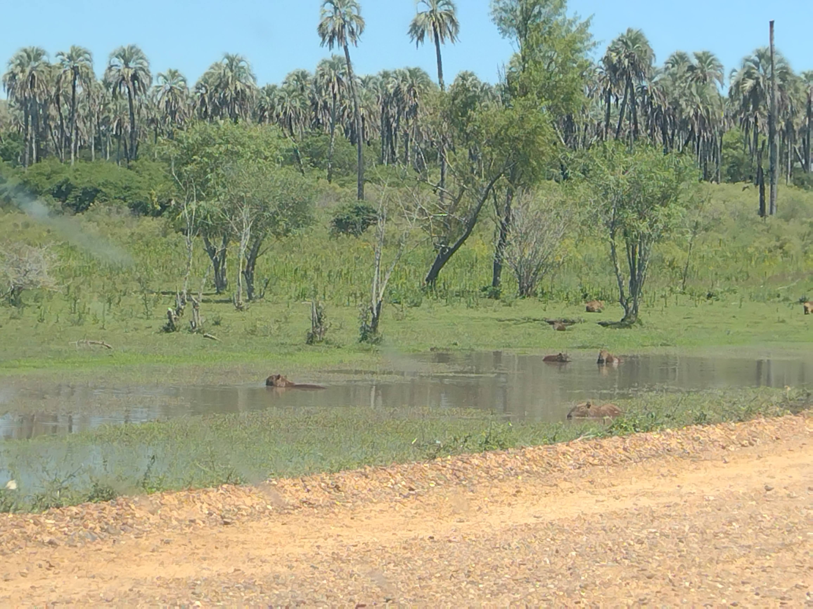
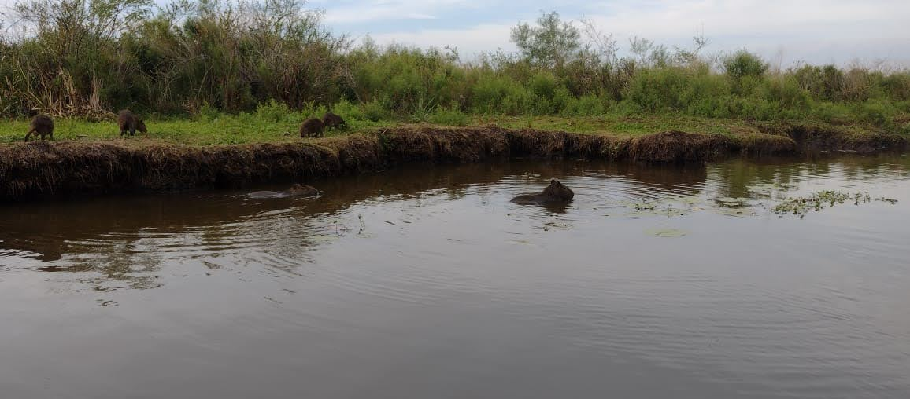

Esteros del Iverá
La Reserva Provincial del Iberá es un área protegida dentro de los extensos Esteros del Iberá, en el noreste de Argentina. Abarca pantanos, ciénagas y lagunas que se extienden al suroeste desde la ciudad de Ituzaingó hasta Chavarría. Junto a la laguna Iberá está la villa Colonia Carlos Pellegrini, que sirve de base en el área.
|  |  |
Estero |
Estero |
|  |  |
Estero |
Estero |
El Palmar
El Parque Nacional El Palmar se encuentra al noreste de Argentina, en la provincia de Entre Ríos, a orillas del río Uruguay. Es conocido por el palmar yatay que domina el paisaje. Los caminos conducen a la Calera del Palmar, donde se encuentran las ruinas de un establecimiento jesuita, y a los miradores del arroyo Los Loros y La Glorieta, desde donde se puede observar el parque. Los bosques del parque albergan pájaros carpinteros, linces, armadillos y zorros.
|  |  |
El Palmar |
El Palmar |
|  | |
El Plamar |
El Palmar |